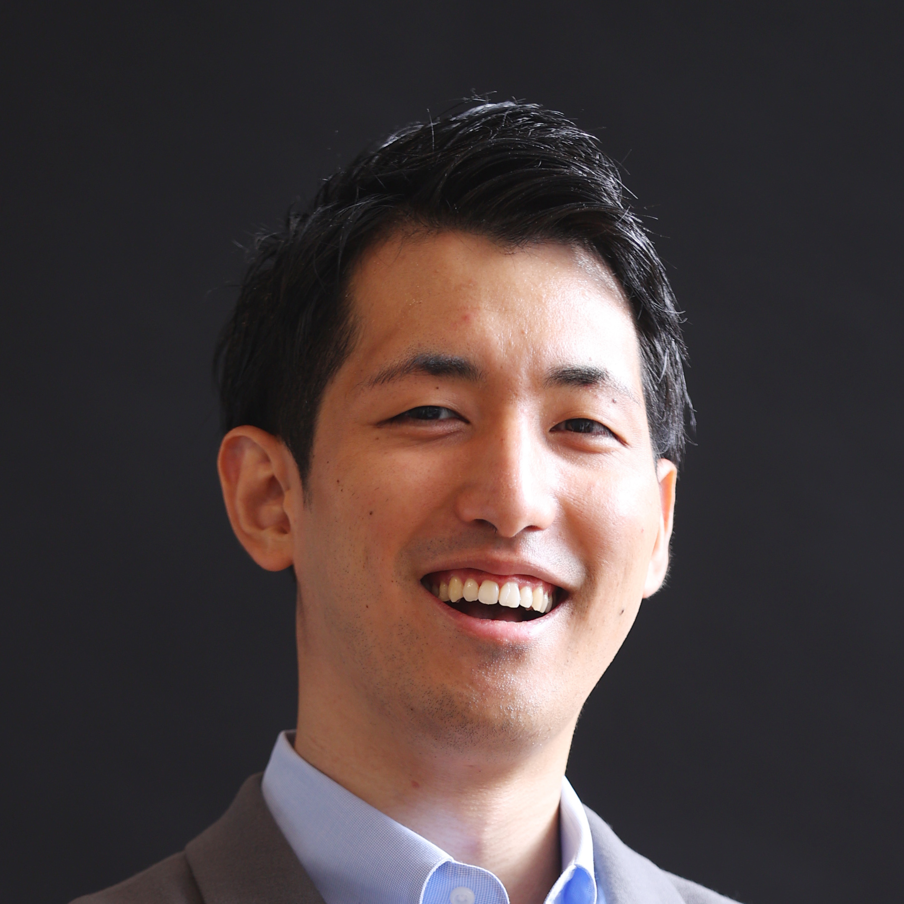

Building next-generation
AI products.
About
Pacific Technology Labs is a technology company building intelligent software products powered by artificial intelligence. Founded in 2026 by Hiro Yamada, the company is focused on designing, developing, and shipping AI-native products that solve hard problems across industries.
We believe artificial intelligence will fundamentally reshape how people live and work, and that the companies building this technology have a responsibility to ensure it makes people’s lives meaningfully better. Pacific Technology Labs exists to build products that reflect that belief: AI that is useful, humane, and grounded in real human needs.
Pacific Technology Labs brings together deep expertise in machine learning, product engineering, and software architecture, drawn from years of building products at some of the world’s most respected technology companies and scaling a venture-backed engineering firm from zero to millions in revenue.
The company is headquartered in the United States and incorporated in Delaware.
Mission & Vision
Our Mission
To build AI-powered products that are useful, humane, and grounded in real human needs. We believe the companies creating artificial intelligence have a responsibility to ensure the technology genuinely improves how people live and work, and we hold ourselves to that standard in every product we ship.
Our Vision
A world where artificial intelligence is a practical, trusted tool in everyday life, not a source of complexity or concern. We envision AI products that feel natural to use, work reliably at scale, and create lasting value for the people and organizations they serve.
Our Values
We move fast, iterate constantly, and put products in users’ hands early. Speed of learning compounds.
Every product decision starts from a genuine human need. If it doesn’t solve a real problem, we don’t build it.
Great products are made in the margins: the edge case handled well, the latency shaved, the interface simplified.
Product Development
What we’re building
Pacific Technology Labs is developing an AI-powered cross-border tax advisory platform designed to make international tax compliance accessible to individuals and small businesses operating across borders.
Today, cross-border tax advisory is a $6.5 billion market dominated by the Big Four accounting firms, with minimum engagements often starting at $10,000 or more. This leaves a large and growing population underserved: founders running companies across borders, freelancers and remote workers with income in multiple jurisdictions, individuals with international investments or stock compensation, and small businesses expanding internationally. These people are left navigating complex treaty provisions, foreign tax credits, and multi-jurisdiction filing requirements with fragmented, expensive, and largely manual guidance.
Meanwhile, the AI tax technology market remains nascent — under $250 million globally — and almost entirely focused on domestic tax prep and indirect tax compliance. No one is building an AI-native platform specifically for cross-border individual and SMB tax advisory.
Pacific is building intelligent software that automates cross-border tax analysis, surfaces relevant treaty provisions, and provides personalized compliance guidance — paired with human expertise for final review and confirmation. Our goal is to deliver the quality of a Big Four engagement at a fraction of the cost.
The product is currently in early-stage development. We are actively researching the regulatory landscape across key jurisdictions, validating core assumptions through conversations with cross-border professionals, and evaluating AI approaches for tax document analysis and jurisdiction mapping. We expect to begin prototype testing in the coming months and will share more publicly as the product matures.
Why we’re building this
This product is rooted in firsthand experience. Our founder has personally navigated cross-border tax complexity across the US and Japan — first as a software engineer exercising stock options during a company’s IPO, and later as a startup CEO managing investor SAFEs, international payroll, and multi-jurisdiction corporate tax obligations. In both cases, the advisory options available were either prohibitively expensive or dangerously inadequate. Pacific exists because we believe this problem is now solvable with AI — and because we’ve lived the cost of it not being solved.
Our product development approach
Research & Discovery
We begin by deeply understanding the problem space: studying the regulatory landscape, mapping the competitive environment, and speaking directly with the people who live with the pain every day.
Rapid Prototyping
We build early and test often. Functional prototypes let us stress-test assumptions, surface edge cases, and validate AI approaches before committing to a full architecture.
Architecture & Build
Once the core insights are validated, we design for scale. We prioritize reliability, security, and maintainability — building software that will hold up under real-world conditions.
Launch & Iterate
We ship to real users, measure what matters, and improve continuously. Speed of learning compounds — we get the product into people’s hands and let feedback drive the roadmap.
Founder

Hiro Yamada is the Founder of Pacific Technology Labs. He is a software engineer, entrepreneur, and product builder with over a decade of experience at the intersection of AI and software development.
Prior to founding Pacific Technology Labs, Hiro co-founded and served as CEO of First Mate Technologies, a software and AI engineering studio that partnered with over 40 venture-backed startups to design and ship production-grade products. Under Hiro’s leadership, First Mate grew to $2 million in annual recurring revenue and built a team of 30+ senior engineers. The company’s clients included startups backed by Y Combinator, Andreessen Horowitz, NFX, Village Global, and South Park Commons, spanning fintech, govtech, legal tech, robotics, and enterprise SaaS.
Before First Mate, Hiro spent five years at Asana, the work management platform. He joined as a software engineer on the monetization team in San Francisco, where he contributed to products serving millions of users globally. He later transitioned to the business side to launch Asana’s Tokyo office as its first employee, helping bring the product to the Japanese market.
Earlier in his career, Hiro held engineering roles at Palantir Technologies, where he worked as a Forward Deployed Product Developer, and at Google, where he built features for Google+ Communities on Android.
Hiro holds a Master of Business Administration from Harvard Business School, a Master of Science in Engineering Sciences from Harvard, and a Bachelor of Arts cum laude in Computer Science from Harvard University. He was a UNIQLO HBS Fellow, receiving full tuition sponsorship for his MBA.